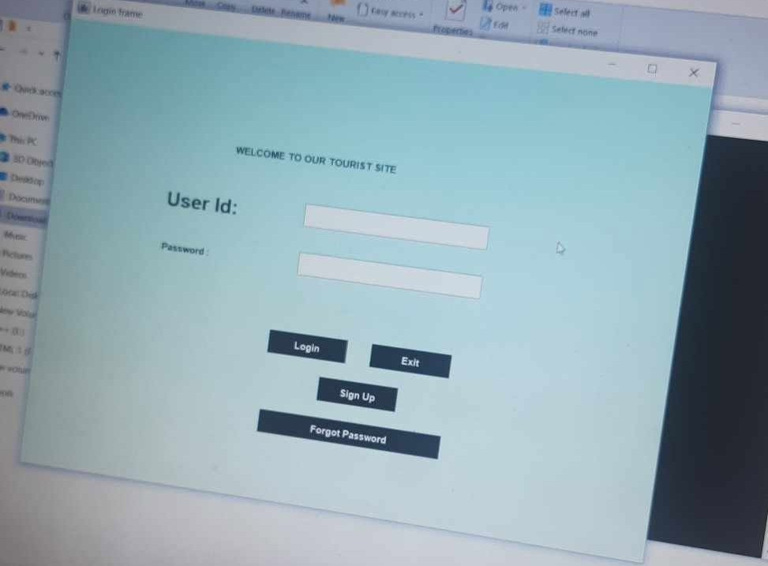
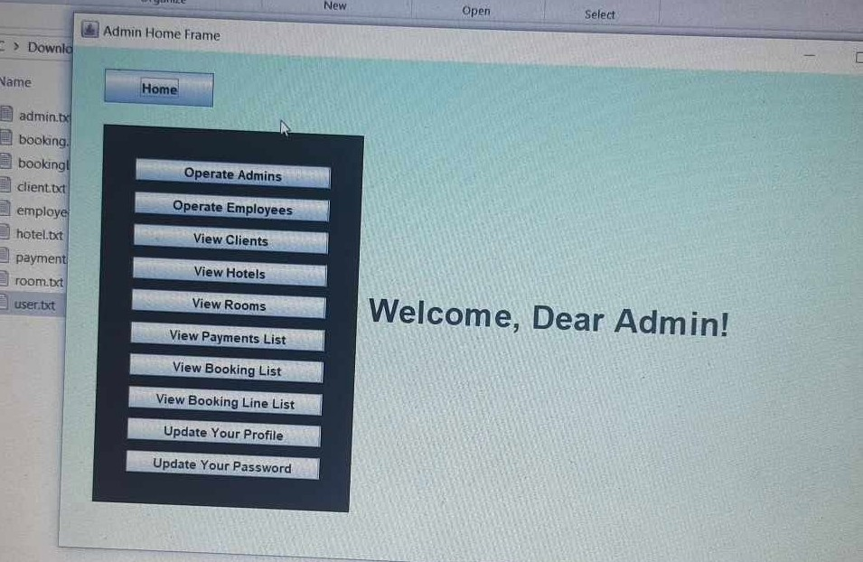
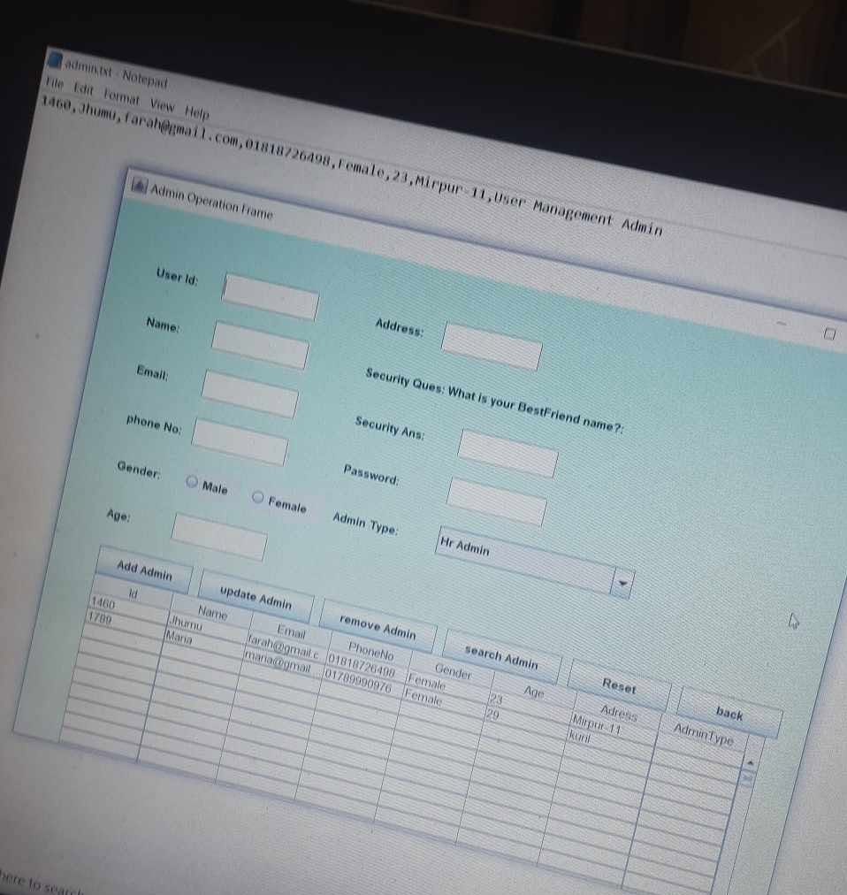
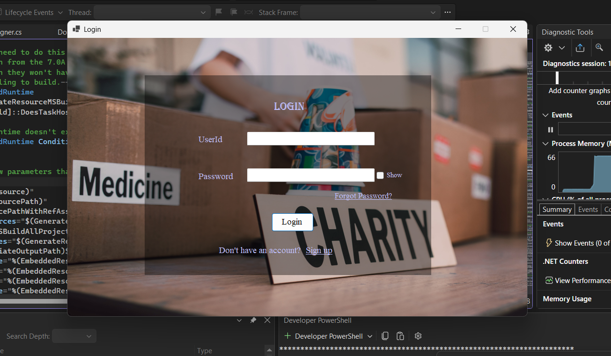
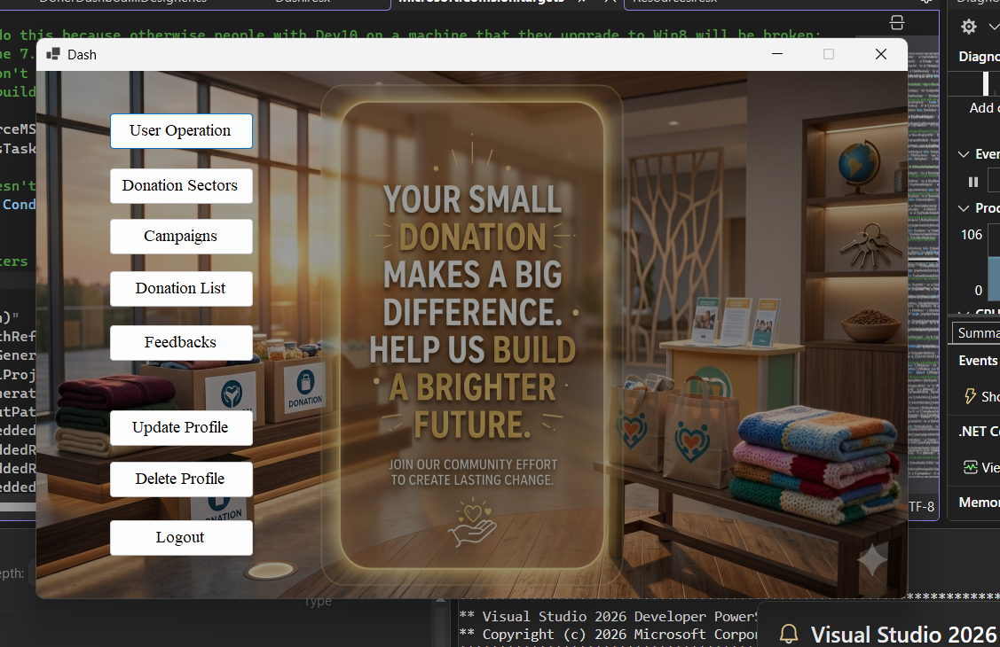
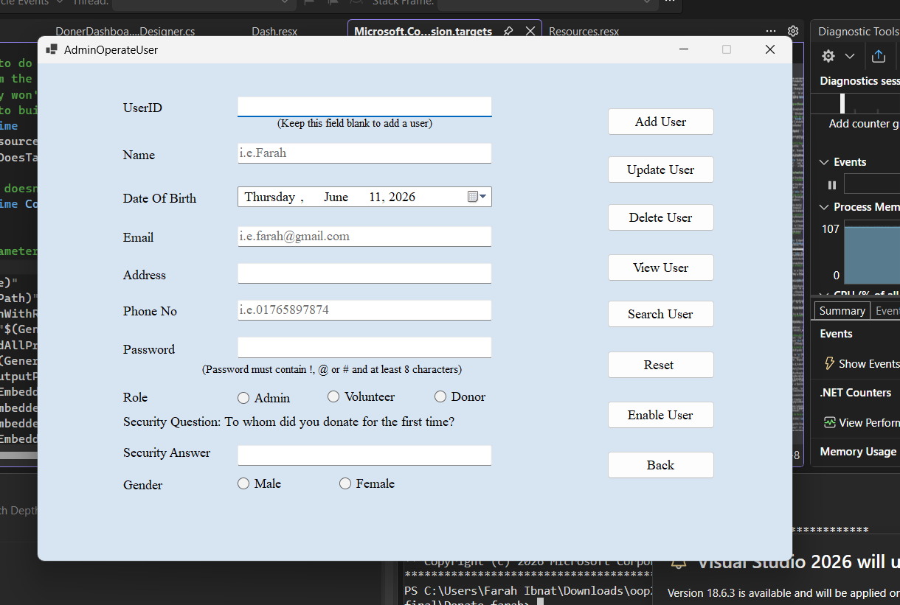
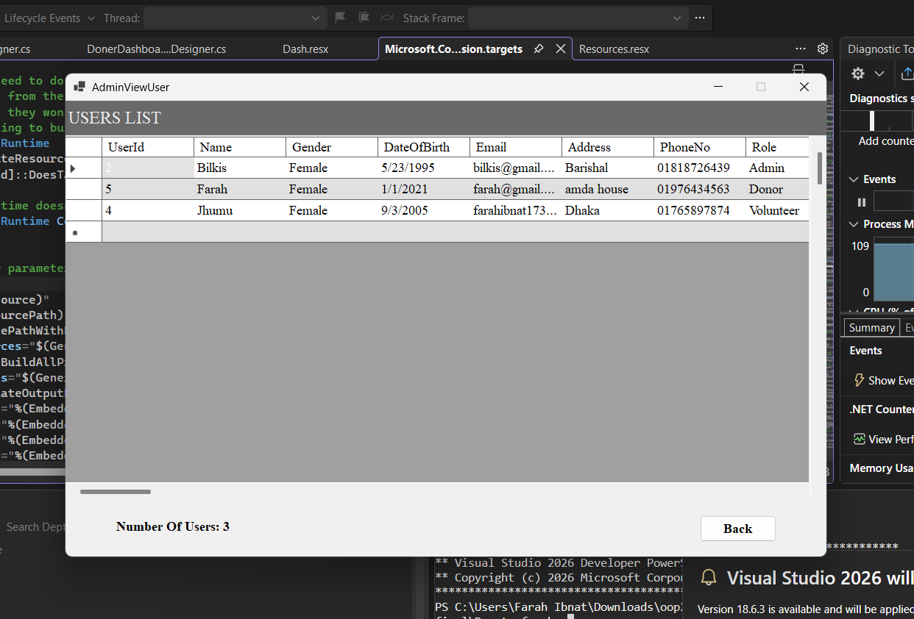
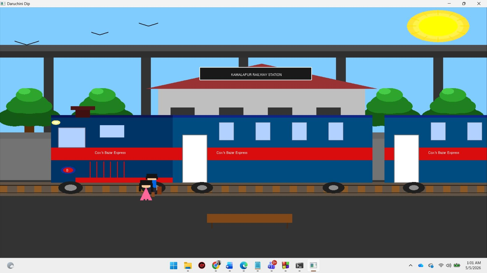
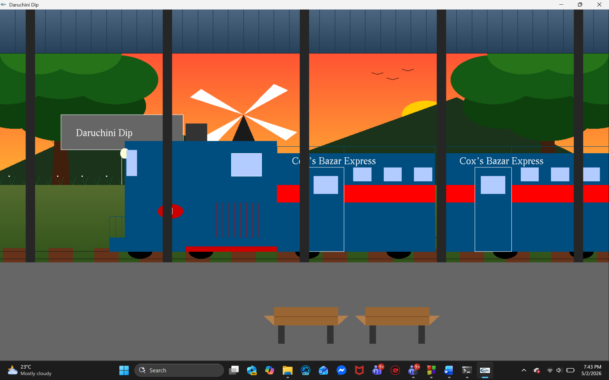
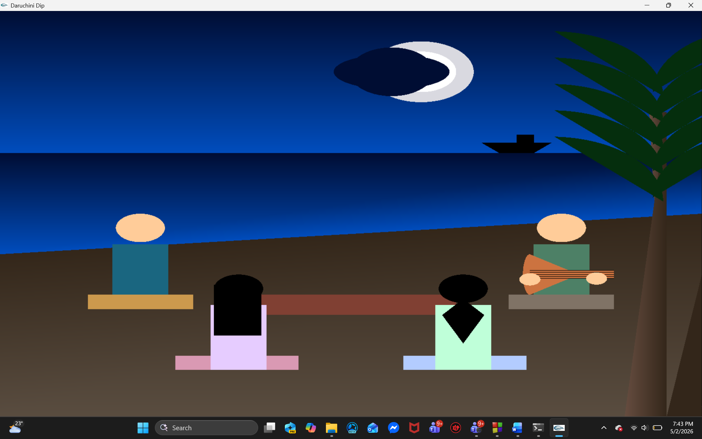

Technology: Java
Developed a Tourism Management System to streamline travel and tourism services through a centralized platform. The system includes hotel reservations, room management, ticket booking, transportation services, payment processing, and customer feedback management.
Implemented role-based access for Admin, Employee, and Client users, enabling efficient management of bookings, customer information, and tourism operations while improving the overall user experience.
Github Link: Github




Technology: C#
Donation Management System has three types of users: Admin, Volunteer and Donor. There are different donation sectors managed by the admins and the donors can donate under these sectors. Admins can arrange campaigns in which volunteers can participate. Volunteers use the donations in the campaigns they participate. Admins can manage other admins and volunteers whereas donors are managed by the volunteers. Donors can also calculate zakat and see self-donation history. They give feedback which are reviewed by the admins and volunteers. Each user can login, logout and update their own profile. Donors can become the part of the system either through signing up himself or being added by a volunteer. Admins and volunteers are added to the system by an admin. The first admin is added manually in the database.
Github Link: Github



Technology: C++
The project "Daruchini Dip," illustrates a travel story involving a group of friends. The implementation is divided into three distinct sequential scenarios:
Github Link: Github
Back To Home Page